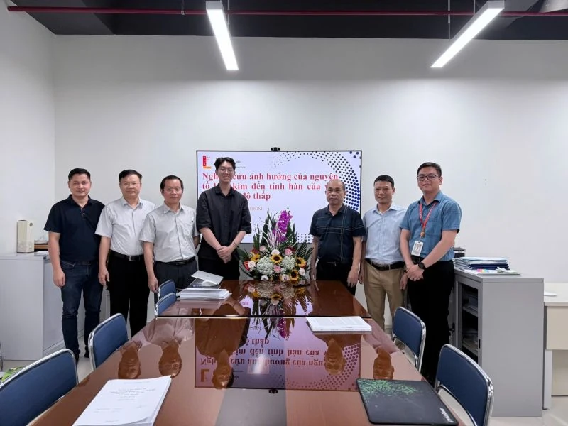
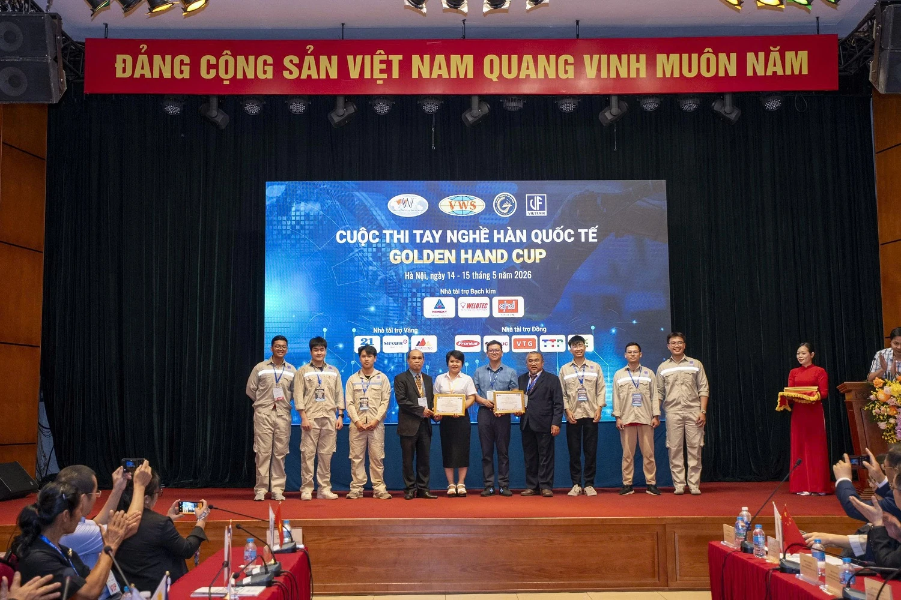
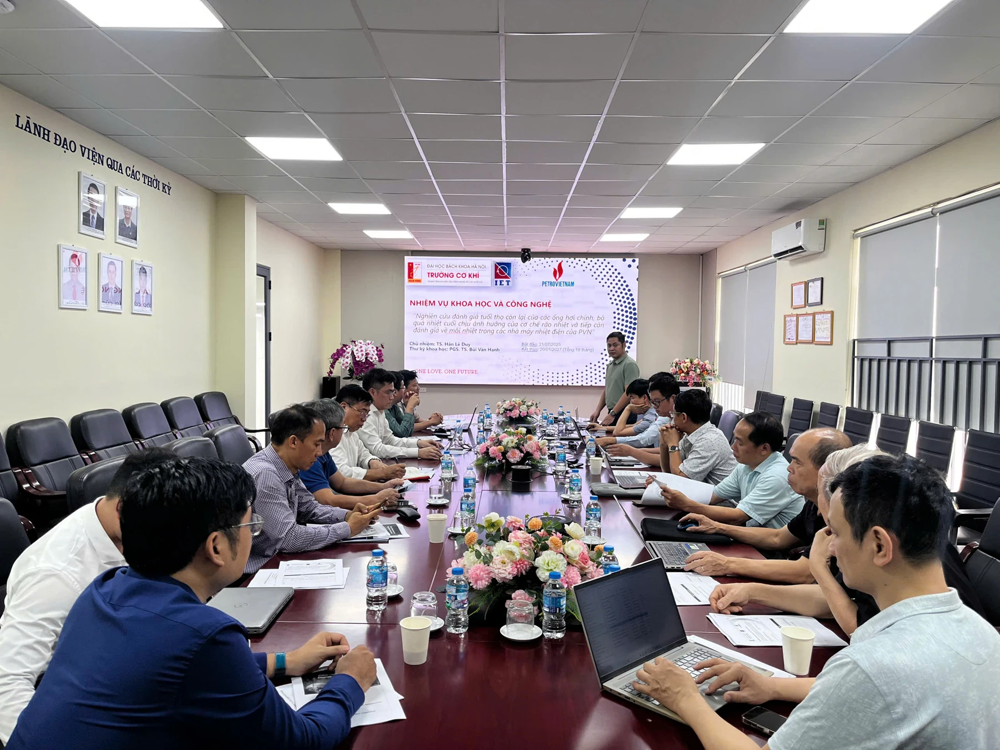
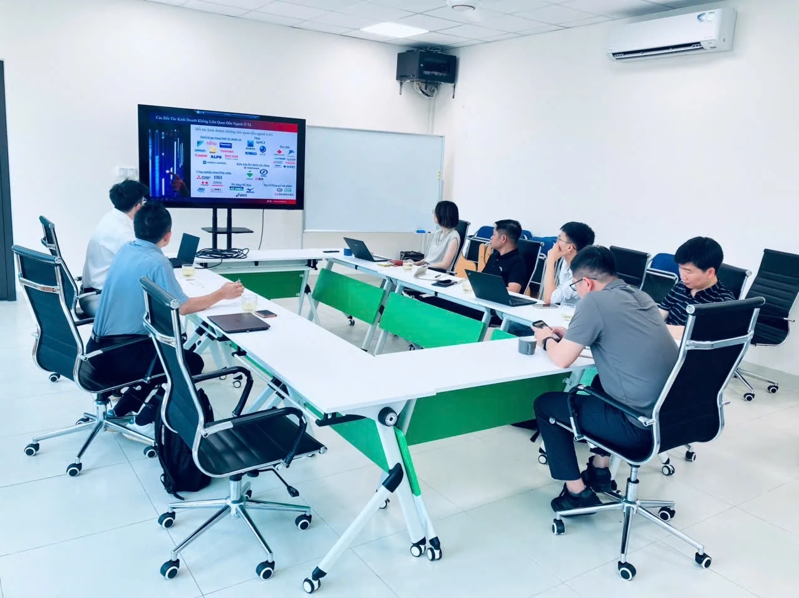
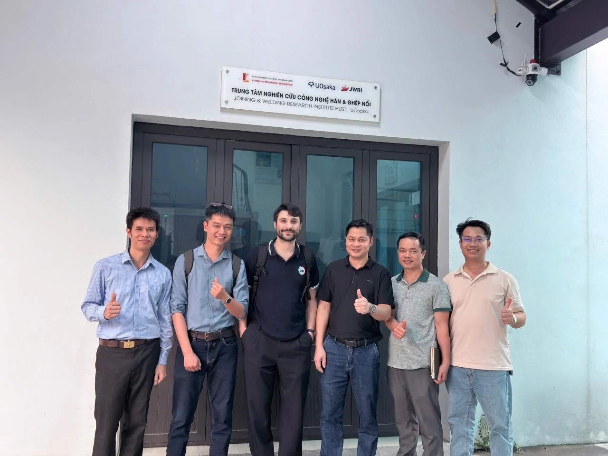
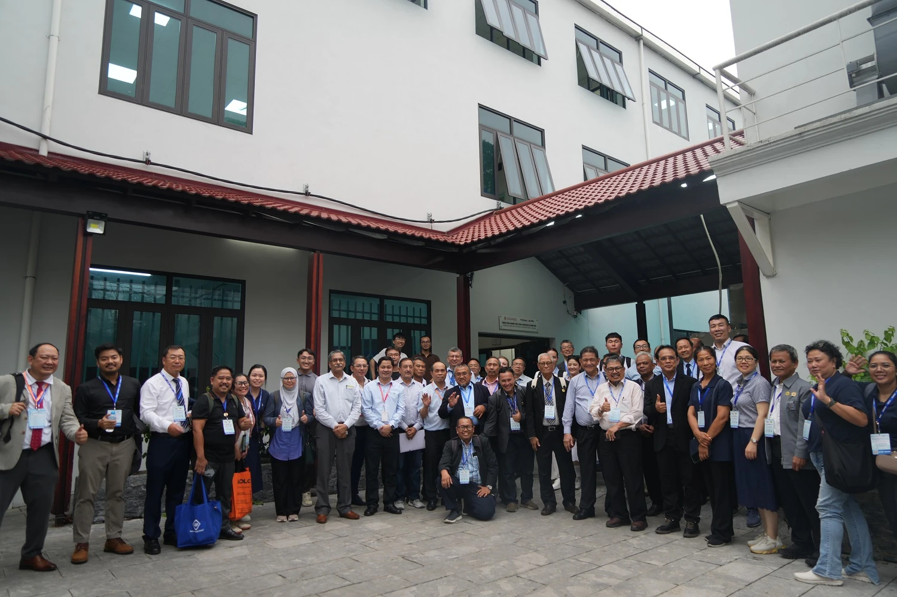
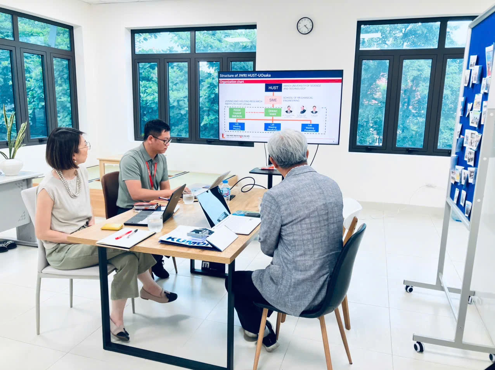

Bài viết gốc bằng tiếng Việt

Tiếp nối những thành công rực rỡ từ những tháng đầu năm, bước sang Quý 2/2026, Trung tâm Nghiên cứu Công nghệ hàn & Ghép nối JWRI HUST-UOsaka tiếp tục duy trì nhịp độ làm việc sôi nổi, ghi dấu ấn mạnh mẽ trên cả ba trụ cột: Nâng tầm đào tạo, đẩy mạnh nghiên cứu ứng dụng và mở rộng mạng lưới hợp tác quốc tế.
1. Nâng tầm Đào tạo gắn liền với Thực tiễn và Đổi mới Sáng tạo
Đầu tháng 04/2026, không khí học thuật tại Trung tâm được hâm nóng với Lễ bảo vệ luận văn Thạc sĩ của học viên Nguyễn Thế Anh. Với đề tài "Nghiên cứu ảnh hưởng của nguyên tố hợp kim đến tính hàn của vảy hàn nhiệt độ thấp", đây là một trong những hướng nghiên cứu tiên phong, đón đầu xu hướng ứng dụng trong lĩnh vực bán dẫn (semiconductor), đặc biệt là công nghệ hàn linh kiện điện tử (3D packaging).
Lễ bảo vệ luận văn Thạc sĩ của học viên Nguyễn Thế Anh cùng hội đồng đánh giá
Sự xuất sắc trong công tác đào tạo không chỉ dừng lại ở các đề tài nghiên cứu mà còn được minh chứng qua năng lực thực chiến của sinh viên. Trong hai ngày 14-15/05/2026, hai nhóm sinh viên của Trung tâm đã xuất sắc đoạt Giải Ba tại cuộc thi Golden Hand Cup (Cúp Bàn tay vàng) do Hội Khoa học Kỹ thuật Hàn Việt Nam tổ chức. Các bạn đã thể hiện kỹ năng vượt trội khi chinh phục thành công hai hạng mục đầy thách thức là hàn ảo và cobot hàn (robot cộng tác).

Hai nhóm sinh viên Trung tâm rạng rỡ nhận Giải Ba tại cuộc thi Golden Hand Cup
2. Đẩy mạnh Nghiên cứu Chuyên sâu và Giải quyết Bài toán Doanh nghiệp
Song song với đào tạo, hoạt động kết nối doanh nghiệp và nghiên cứu chuyên sâu tiếp tục gặt hái nhiều "trái ngọt". Ngày 21/04/2026, TS. Hán Lê Duy (Phó Giám đốc Trung tâm) - trong vai trò Chủ nhiệm đề tài, đã chủ trì buổi hội thảo báo cáo giai đoạn 1 cùng Tập đoàn Dầu khí Việt Nam (PVN). Đề tài trọng điểm "Nghiên cứu đánh giá tuổi thọ còn lại của các ống hơi chính, bộ quá nhiệt cuối chịu ảnh hưởng của cơ chế rão nhiệt và tiếp cận đánh giá về mỏi nhiệt trong các nhà máy nhiệt điện của PVN" mang ý nghĩa then chốt, giải quyết trực tiếp bài toán đảm bảo an toàn và tối ưu hóa vận hành cho doanh nghiệp.

TS. Hán Lê Duy chủ trì hội thảo báo cáo chuyên môn giai đoạn 1 với Tập đoàn PVN
Bên cạnh đó, Trung tâm cũng đã có các phiên làm việc hiệu quả với Tập đoàn JSOL (Nhật Bản) nhằm thảo luận và thống nhất các kế hoạch hợp tác đào tạo, nghiên cứu chuyên sâu trong lĩnh vực mô phỏng hàn.

Buổi làm việc giữa Trung tâm và đại diện Tập đoàn JSOL về mô phỏng hàn
3. Điểm sáng trong Công tác Đối ngoại và Hợp tác Quốc tế
Quý 2/2026 chứng kiến sự bùng nổ trong các hoạt động giao lưu học thuật và đối ngoại mang tầm vóc quốc tế. Ngày 17/04/2026, Trung tâm đã tổ chức buổi trao đổi học thuật cùng các nhà nghiên cứu từ Học viện Kỹ thuật Quân sự và TS. Giulio – Nghiên cứu viên (Research fellow) đến từ CeSMA, Đại học Naples Federico II (Ý). Các bên đã thảo luận sôi nổi về tiềm năng của công nghệ in 3D kim loại và ứng dụng Học máy (Machine Learning) trong lĩnh vực hàn.

Gặp gỡ trao đổi cùng đại diện Học viện Kỹ thuật Quân sự và TS. Giulio
Đỉnh điểm của chuỗi sự kiện đối ngoại diễn ra vào ngày 16/05/2026, khi Trung tâm vinh dự đón tiếp phái đoàn quốc tế quy mô lớn gồm hơn 30 chuyên gia và lãnh đạo đến từ các tổ chức hàn uy tín toàn cầu: Hội Hàn Mỹ (AWS), Hội Hàn Nga (RWS), Hội Kỹ thuật Hàn Nhật Bản (JWES), Hội Hàn Ấn Độ (IIW), cùng các Hội thành viên thuộc Liên đoàn Hàn Châu Á (AWF). Chuyến thăm lịch sử này một lần nữa khẳng định vị thế và uy tín ngày càng cao của JWRI HUST-UOsaka trên bản đồ công nghệ hàn thế giới.

Phái đoàn hơn 30 khách quốc tế từ AWS, RWS, JWES, IIW và AWF thăm và làm việc tại Trung tâm
Khép lại Quý 2 đầy sôi động, vào ngày 11/06/2026, Trung tâm đã tiếp đón Giáo sư Oh đến từ Đại học Công nghệ Quốc gia Kumoh (Hàn Quốc). Buổi làm việc đã mở ra nhiều định hướng mới về hợp tác trao đổi sinh viên, cung cấp các học bổng sau đại học giá trị, đồng thời thắt chặt hơn nữa cơ hội hợp tác nghiên cứu song phương trong tương lai.

Buổi tiếp đón và làm việc cùng Giáo sư Oh từ Đại học Công nghệ Quốc gia Kumoh